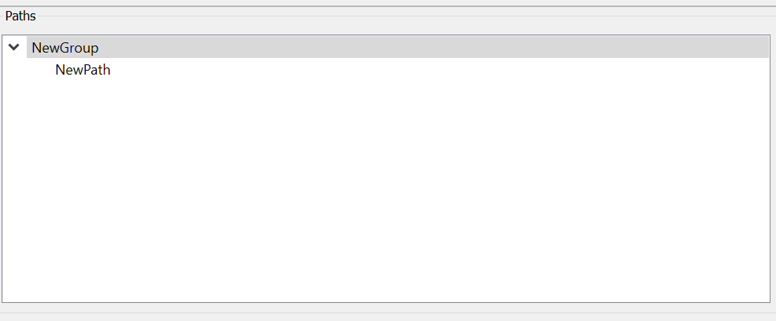

Create A Path

Now create a new path by selecting the path group in the Path File
window and selecting the menu item Edit/Add Path. A new path named
“NewPath” will be created and can be seen in the Path File window. This
can also be renamed by double clicking the path in the Path File window.
Next: Edit The Path